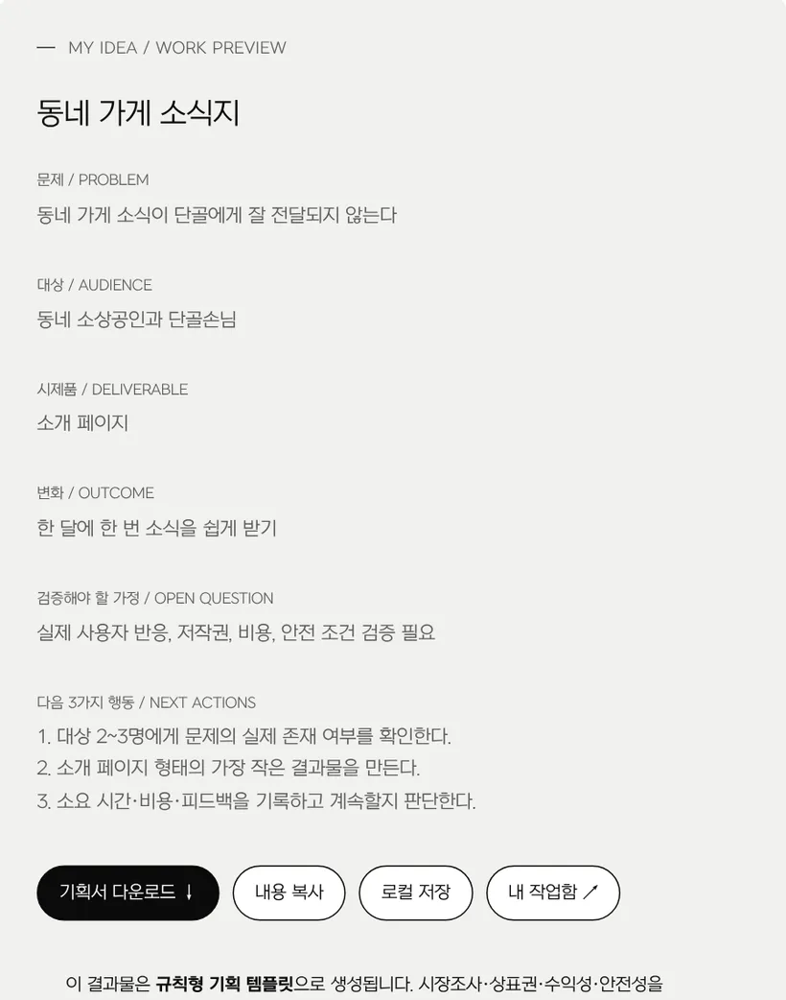
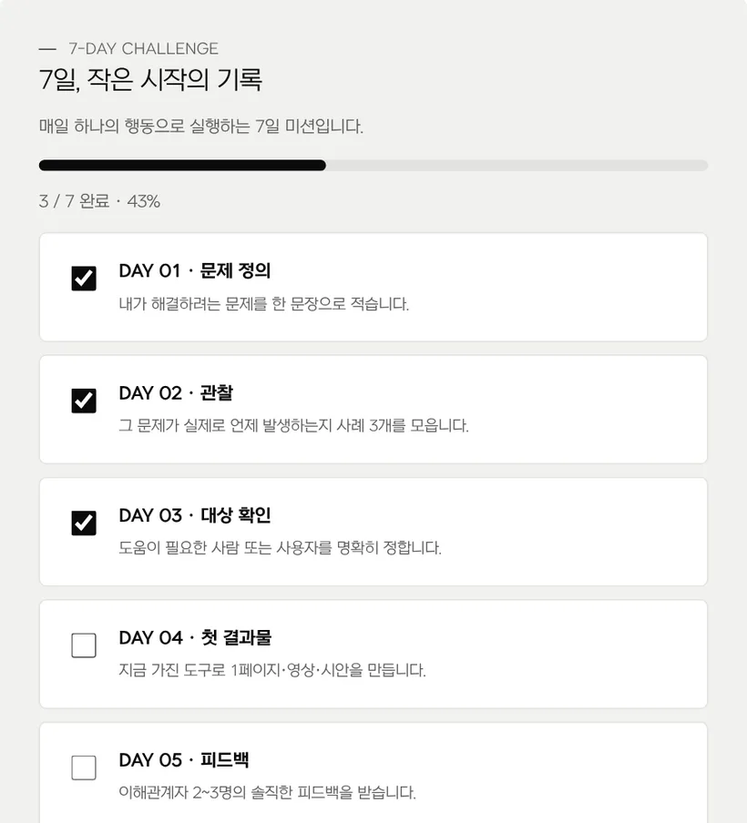
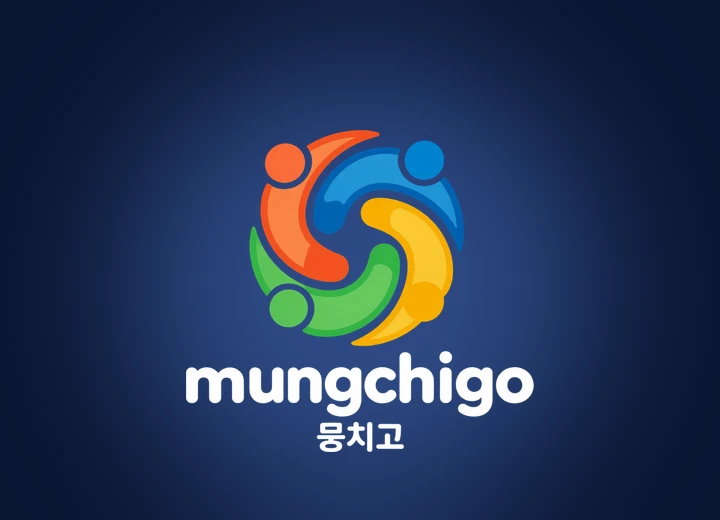
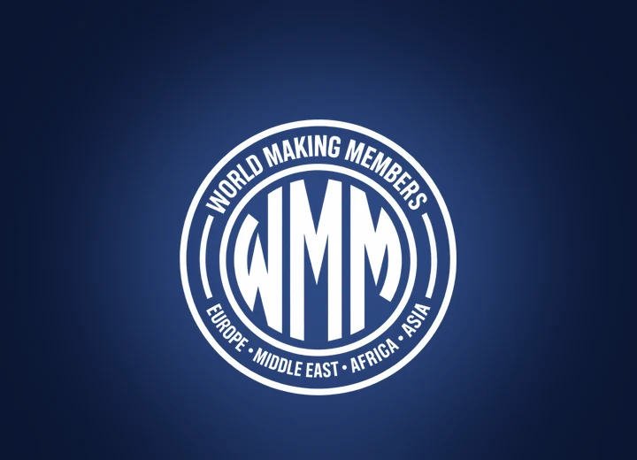
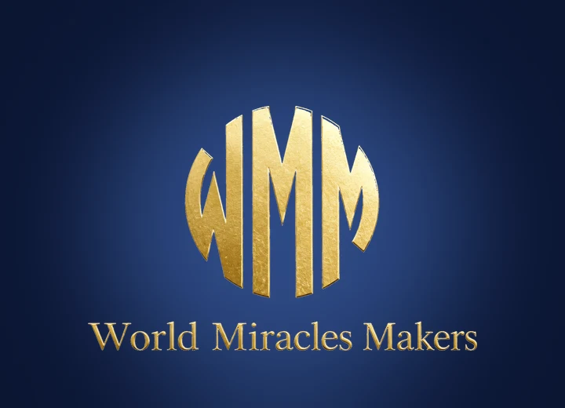

아이디어가 움직이면 세상도 움직인다!When ideas move, the world moves!
WMM PLAYGROUND뭉치고Mungchigo
아이디어 · 창작 · 협업 · 사업화까지,
세상과 연결되는 글로벌 크리에이티브 놀이터Ideas, making, teamwork and business:
a global creative playground connected to the world
가입 없이 무료 · 입력한 내용은 내 브라우저에만 저장Free, no sign-up · what you type stays in your browser
20초 사용법 · 찾기 → 만들기 → 실행 → 검증 (실제 화면)20-second guide · Find → Make → Act → Validate (actual screens)
1단계 · 놀이터 안의 네 걸음STEP 1 · FOUR MOVES INSIDE THE PLAYGROUND
찾고, 만들고, 실행하고, 검증하기Find, make, act, validate
아이디어 고르기 → 나에게 맞는 시작점 추천 → 한 장의 기획서 → 7일 실천·14일 검증. 모두 무료이고, 입력한 내용은 내 브라우저에만 저장됩니다.Pick an idea → get matched starting points → write a one-page plan → act for 7 days and validate for 14. All free; what you type stays in your browser.
12개 분야, 120개의
WMM 자체 기획 아이디어120 original WMM ideas
across 12 fields
AI·디자인·영상·코딩·재난 준비·공익까지. 바로 해 볼 수 있는 기획 초안을 분야와 시간으로 골라 보세요.From AI, design and video to coding, preparedness and impact. Filter ready-to-try drafts by field and time.

목표·시간·방식을 고르면
나에게 맞는 6가지를 추천Pick a goal, time and mode.
Get six matched starting points.
추천 이유와 7일 실행계획까지 이어집니다. 서버로 전송하지 않고 브라우저 안에서 계산합니다.Each comes with a reason and a 7-day plan, calculated in your browser without sending data.

한 줄의 생각을
한 장의 기획서로Turn one line
into a one-page plan
문제·대상·결과물·검증할 가정·다음 행동 세 가지를 정리하고 파일로 내려받습니다.Lay out the problem, audience, deliverable, assumptions and three next actions, then download it.

7일 실천과 14일 검증,
21단계 실행 체크리스트Seven days of practice, fourteen of validation.
21 steps in all.
하루 하나씩 체크하면 진행률이 저장됩니다. 다시 열어도 이어서 할 수 있습니다.Tick one a day and your progress is saved, so you can pick up where you left off.

혼자 시작해도, 세계와 함께 갑니다Start on your own, grow with the world
놀이터에서 시험한 아이디어는 WMM의 온라인·오프라인·해외 네트워크로 이어집니다.Ideas tested here connect to WMM's online, offline and overseas network.
온라인Online
- 가입 없이 지금 바로 시작Start now, no sign-up
- 기록은 내 브라우저에만 저장Your notes stay in your browser
- 193개국 정부 사업 정보와 연결 (GOV RADAR)Linked to public programmes in 193 countries (GOV RADAR)
오프라인Offline
- 서울에서 직접 만나는 상담Meet us in person in Seoul
- 설명회·파트너 모임에서 사람과 연결Briefings and partner meetups
- 발표 리허설을 마주 앉아 진행Pitch rehearsals face to face
글로벌Global
- 영국 GCSME 공식 한국지사Official Korea branch of GCSME (UK)
- 해외 기관·기업과 협업 연결Introductions to overseas partners
- 두 언어로 아이디어 소개하기Present your idea in two languages
미래 준비Ready for what's next
- AI로 반복 일을 줄이는 연습Practise cutting busywork with AI
- 기후·재난 대비 아이디어Climate and preparedness ideas
- 7일 실천 · 14일 검증으로 몸에 익히기Build the habit: 7 days of practice, 14 of validation
아이디어는 거창할 필요가 없어요.
오늘 하나만 만들어 보세요.
문제를 한 줄로 적으면 실행 목적, 대상, 산출물, 다음 세 가지 행동을 정리해 드립니다. 유료 AI 호출 없이 브라우저에서 동작합니다.
무료 아이디어 스튜디오 열기 ↗WMM 길 · 네 단계THE WMM PATH · FOUR STEPS
시험하고, 확인하고,
실행하고, 함께 나눕니다.Test it, check it,
build it, share it.
WMM의 네 곳은 따로 떨어진 사이트가 아니라 한 길의 네 단계입니다. 어느 단계에서 시작해도 다음 단계로 이어지고, 다음 단계로 넘어갈지는 언제나 본인이 정합니다.WMM’s four places are not separate sites but four steps on one path. Start anywhere; moving on is always your choice.
- 1 · 시험하기Test

지금 여기 · 무료 · 가입 없음You are here · Free · No sign-upWMM PLAYGROUND
뭉치고Mungchigo누구나 아이디어를 고르고 한 장의 기획서로 만든 뒤 7일 실천·14일 검증으로 직접 시험합니다.Anyone can pick an idea, turn it into a one-page plan and test it for 7 to 14 days.
놀이터 둘러보기 ↓Explore the playground ↓ - 2 · 확인하기Check무료 가입 · 분석 회원Free sign-up · Member analysis
GOV RADAR
기회와 위험을 원문으로Opportunities and risks, from source193개국 정부 과제·공개 입찰·위험 정보에서 내 아이디어가 들어갈 기회를 발주처 원문으로 확인합니다.Check where your idea fits among public agendas, open tenders and risk data in 193 countries, straight from the source.
GOV RADAR 열기 ↗Open GOV RADAR ↗ - 3 · 실행하기Build

상담 · 프로젝트 · 멤버십Consulting · Projects · MembershipWORLD MAKING MEMBERS
WMM 홈페이지 · 한 팀으로 실행WMM headquarters · one team해외진출 진단, 영문 기업서류, 6주 시장 검증, 제안서·웹·영업 운영까지 담당자·산출물·일정을 정해 함께 실행합니다.Market-entry diagnosis, English company papers, 6-week market validation, proposals, web and sales operations, with agreed owners, deliverables and timelines.
WMM 홈페이지 열기 ↗Open WMM site ↗ - 4 · 나누기Share

만들고 있어요 · 모금 없음In the making · No fundraisingWORLD MIRACLES MAKERS
수익으로 함께 돕기Helping with what we earn앞 단계에서 생긴 수익의 일부로 자폐 아동 피아노·힐링 지원 같은 선한 일을 합니다. 지금은 기부·후원금을 받지 않습니다.Part of what the earlier steps earn will fund good work such as piano and healing support for autistic children. No donations are accepted yet.
구상 보기 ↓See the plan ↓